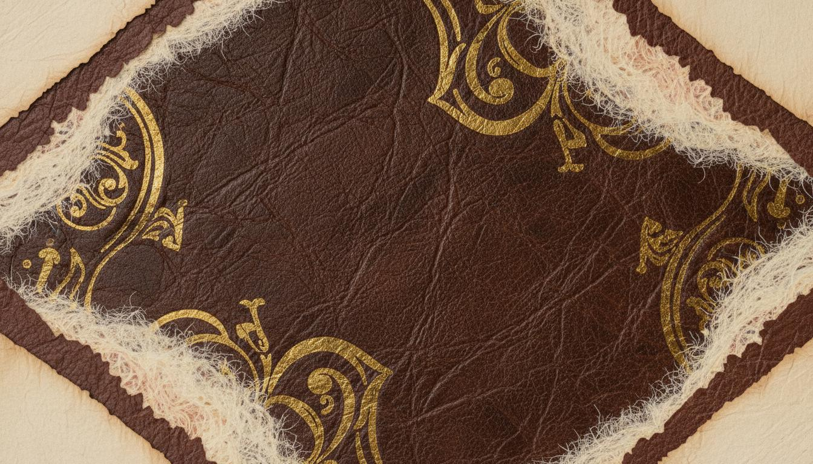
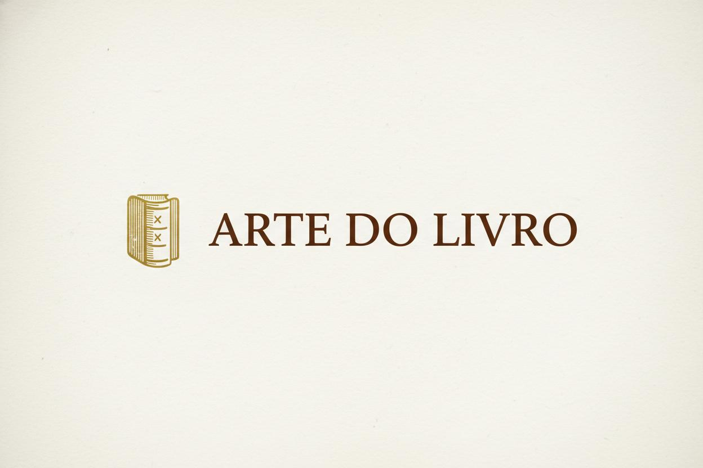
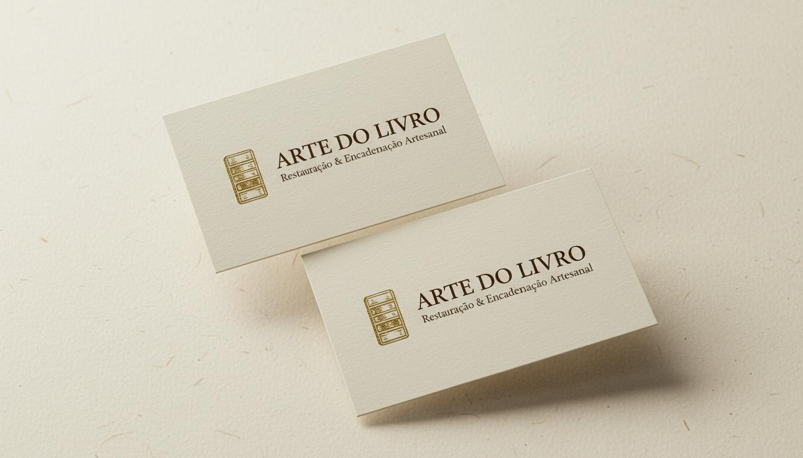

A marca Arte do Livro representa mais de três décadas de ofício dedicado à preservação da memória institucional brasileira. Cada livro restaurado ou encadernado carrega em suas fibras o compromisso de perpetuar a História com a mesma dignidade com que foi escrita.
A identidade visual traduz esse legado através de uma estética que evoca o calor do couro artesanal, a nobreza do ouro envelhecido e a solidez da tradição cartorária. É uma marca que respira respeito pelo documento, pela instituição e pelo tempo.
"Restauração e encadernação artesanal de Livros Oficiais, realizada in locu nas serventias, com mais de 30 anos de ofício e a durabilidade que a História exige."
O emblema combina um escudo heráldico — símbolo de proteção, tradição e autoridade — com uma lombada de livro em costura artesanal visível. O escudo remete à segurança institucional dos cartórios; a lombada costurada, ao ofício manual e à durabilidade. Juntos, comunicam: "protegemos a História com as mãos."
A versão horizontal combina o símbolo reduzido com a wordmark "ARTE DO LIVRO" em tipografia serifada clássica. Deve ser usada em cabeçalhos, cartões de visita e materiais onde a leitura do nome é prioritária.

A paleta foi extraída dos materiais genuínos do ofício: couro envelhecido, ferragens de ouro velho, pergaminho e a madeira das estantes que guardam séculos de registros.
A tipografia reforça a dualidade da marca: tradição clássica para títulos (herança, legado, institucionalidade) e legibilidade contemporânea para corpo (clareza, profissionalismo, acessibilidade).
Restauração & Encadernação Artesanal
ABCDEFGHIJKLMNOPQRSTUVWXYZ
abcdefghijklmnopqrstuvwxyz
0123456789
Uso: Títulos de seção, headlines da landing page, wordmark do logo, cabeçalhos de apresentações e materiais institucionais. Sempre em maiúsculas ou title case para headlines principais.
"A cada livro terminado, uma realização pessoal — e a certeza de que contribuí para a guarda da História."
Uso: Subtítulos, citações, frases de impacto, descrições de serviços e textos que precisam de requinte editorial. O itálico é especialmente indicado para depoimentos e trechos inspiradores.
O trabalho é realizado na serventia com material adequado, de forma artesanal, garantindo a durabilidade e o melhor manuseio dos livros oficiais. Nosso atendimento in locu permite que o livro permaneça consultável durante todo o procedimento de restauração ou encadernação.
Uso: Parágrafos, descrições técnicas, formulários, dados de contato, navegação e qualquer texto de leitura contínua. Priorizar peso 400 para corpo e 500/600 para negritos e labels.
| Elemento | Fonte | Tamanho | Peso |
|---|---|---|---|
| Hero Headline | Cinzel | 36–48px | 700 |
| Subtítulo Hero | Playfair Display | 18–22px | 400 Italic |
| H2 (Seções) | Cinzel | 24–28px | 600 |
| H3 (Subseções) | Playfair Display | 18–20px | 600 |
| Corpo | Inter | 16–18px | 400 |
| CTA / Botão | Inter | 14–16px | 600 |
As texturas de couro, pergaminho e papel artesanal são elementos distintivos que podem ser usados como backgrounds em seções especiais da landing page, capas de apresentações e materiais impressos premium. Devem ser usadas com moderação para não competir com o conteúdo.
Uma linha fina em Ouro Antigo (#D4AF37) ou Pergaminho (#C9B896) pode ser usada como separador de seções na landing page e em documentos. Largura recomendada: 1–2px. Comprimento: 40–80px para separadores centrais; 100% para divisões de seção completas.
O símbolo reduzido (apenas a lombada costurada dentro do escudo, sem textura) pode ser usado como favicon, ícone de app, watermark em fotos de portfólio e selo de qualidade em certificados.
O cartão de visita traduz a essência premium da marca em um formato tangível. Papel texturizado off-white, hot stamping dourado no emblema e tipografia em Couro Profundo.

Avatar: símbolo principal em fundo Couro Profundo. Capa: textura de couro com wordmark centralizada e tagline. Feed: fotos artísticas dos livros com watermark discreto do símbolo no canto inferior direito, cor Ouro Antigo com 30% opacidade.
O símbolo deve sempre manter uma área de respiro equivalente à altura do escudo em todas as direções. Nunca distorcer, inclinar, aplicar sombras projetadas ou filtros que alterem as cores oficiais.
| Versão | Uso |
|---|---|
| Principal (marrom/dourado) | Uso padrão em fundos claros e médios |
| Dourada | Fundos escuros, hot stamping, selos premium |
| Monocromática | Impressão em uma cor, fax, carimbos |
| Horizontal | Cabeçalhos, cartões, materiais institucionais |
Esta identidade visual foi concebida para acompanhar a marca "Arte do Livro" em sua missão de expandir o mercado e ser reconhecida como referência em restauração e encadernação artesanal de Livros Oficiais no Brasil. A consistência no uso destes elementos garantirá que a marca seja percebida com a mesma seriedade, tradição e qualidade que o ofício demonstra há mais de 30 anos.
"A História merece durar para sempre."